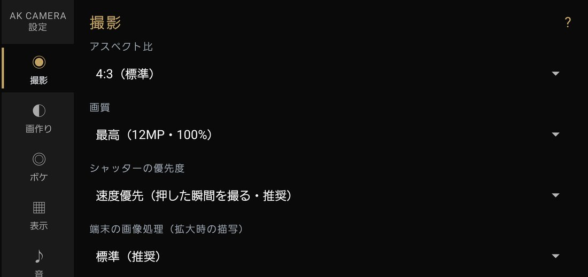

設定画面の見かた

撮影画面の設定を押すと開きます。左に 撮影 / 画作り / ボケ / 表示 / 音 / 保存 / 設定 / アプリ / 開発 の9つのタブが並び、 押したタブの項目が右に出ます。右上の ? を押すと、そのタブで何を決めるのかが出ます。
変えた値はその場で保存され、次に起動したときもそのままです。 露出補正・合成・HDR・フラッシュのように撮影画面でも変えられる項目は、どちらで変えても同じ値です。
下の一覧の「初期値」は、入れた直後の値です。Android 12 以下の端末やメモリの少ない端末では、 動作を軽くするために 合成＝使わない / 画質＝標準 / ボケをプレビューに反映＝OFF から始まります。